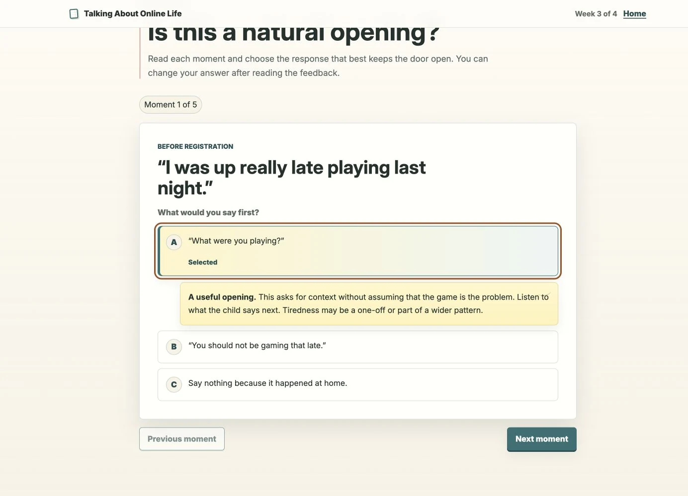
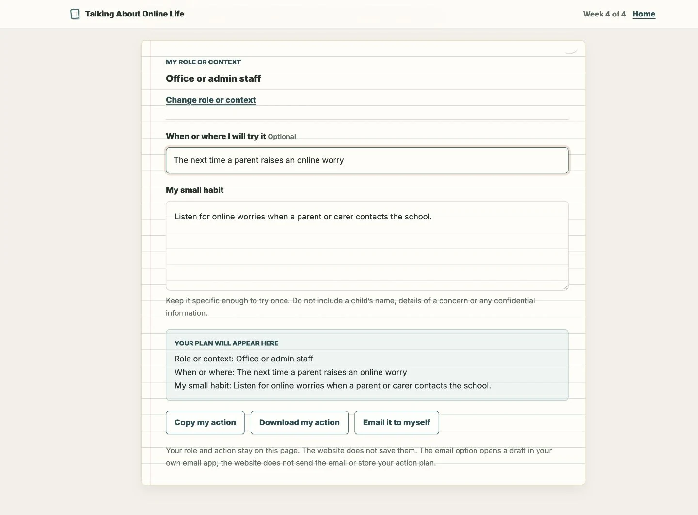

Talking About Online Life
Designing short, scenario-led online-safety CPD that helps school staff discuss children’s digital lives before a concern escalates.
Open the live four-week experience
Built with
- ChatGPT
- Codex
- Google Analytics 4
- HTML5
- CSS3
- JavaScript
- GitHub Pages
The challenge: share safeguarding ownership
In my role as Computing and Digital Learning Lead, online-safety questions and concerns were routinely referred to me. Conversations with staff suggested that children’s online lives could feel like a specialist or technical subject, rather than part of the safeguarding practice every adult already owned.
That mattered because pupil concerns sometimes became visible only after a problem had escalated, while parents were also asking the school for practical support. Staff did not need detailed knowledge of every game or platform to begin a useful conversation.
The design challenge was to make the subject serious enough to support safeguarding, ordinary enough to discuss without alarm and small enough to fit into an already crowded school week.
Case-study stages
- 01DiscoverEvidence and constraints
- 02DefineBehaviour and model
- 03DevelopProduct and interactions
- 04OutcomeValidation and limits
Turn school evidence into practical design decisions
The evidence was organisational and contextual, rather than a formal user-research study. I kept the observed pattern, my inference and the resulting design response separate.
-
Source · Specialist referral pattern
Finding
Online safety was being treated as specialist expertise
Design responseFrame online life as shared safeguarding practice.
-
Source · Pupil concerns after escalation
Finding
Useful conversations were sometimes starting late
Design responseTeach earlier, everyday conversations that keep the door open.
-
Source · Parent requests
Finding
Families wanted practical help from the school
Design responseGive staff calm prompts they can use immediately.
-
Source · Limited staff capacity
Finding
A large training demand would be difficult to sustain
Design responseUse four short modules and one repeatable format.
Define one behaviour, then repeat it
I moved the focus away from teaching staff about individual platforms. The central behaviour became simpler: notice a small reference to online life, ask a calm question and keep the door open. If a concern appears, the school’s safeguarding route takes over.
- 01NoticeA child mentions online life
- 02Ask calmlyCuriosity, not platform expertise
- 03Keep listeningMake future conversations easier
- 04RespondUse the safeguarding route when needed
From a 12-week strategy to a complete intervention
The broader concept was a 12-week culture-change pathway across Awareness, Confidence and Action. I delivered the complete four-week Awareness phase first. The overview and all four weekly modules are finished and live; Confidence and Action remain potential extensions.
Proposed 12-week culture-change strategy
- DeliveredAwarenessFour complete weekly modules
- Potential extensionConfidence
- Potential extensionAction
A repeatable learning model
Each module follows the same sequence, with immediate, non-punitive feedback that builds judgement without turning safeguarding into a recall test.
- 01StoryA recognisable school moment
- 02NoticeInterpret what it might mean
- 03GuidanceConnect to safeguarding
- 04TryChoose one realistic action
- 05ReflectPlace it in real practice
Week 1 begins with Maya mentioning an unfamiliar game. The adult does not need to recognise it. Asking “What do you like about it?” is enough to begin.
Build the complete four-week experience in code
There was no separate Figma phase. I designed and iterated in the browser, using AI to accelerate content exploration and implementation while retaining responsibility for the learning strategy, interactions, safeguarding framing and final copy.
The exercise-book visual world connects the CPD to everyday classroom practice without turning it into a children’s activity. Lined paper, restrained annotations and object-based illustrations add warmth without using identifiable pupils, platform branding or fear-based cyber-safety imagery.


{kind=link}

{kind=link}

Accessible interaction
Semantic headings, a skip link, visible focus, labelled controls, pressed states and live feedback support keyboard, touch and screen-reader use.
Short, stable format
Each standalone link uses the same two-to-four-minute structure, suitable for independent use or a short staff briefing.
Careful measurement
Aggregate events record reach and interaction without staff accounts. Instrumentation is useful for diagnosis, but it cannot establish impact.
These are implemented accessibility measures, not a claim of formal conformance. Supporting email and QR touchpoints were prototyped; a proposed short video was not produced.
Organisational validation, with the limits kept visible
I guided SLT through the functioning four-week intervention. This was an organisational stakeholder walkthrough, not usability testing. SLT approved the genuine need, calm tone, short weekly format, interface and rollout direction.
Low staff capacity made the end of the summer term unsuitable, so rollout moved to the beginning of the following school year.
Delivered work
A complete four-week Awareness intervention
The overview and all four weekly modules are complete and live. The build demonstrates product delivery and an organisationally approved direction.
Next validation
Independent staff use and behavioural evaluation
Rollout must still test whether staff can use the interactions without guidance, find the scenarios relevant and identify an action they would realistically try.
Limitations and next evaluation
- Independent staff use and sustained behavioural impact remain unproven.
- Short interviews are needed to explain where analytics show attention dropping.
- Follow-up should examine whether prompts lead to more regular conversations and earlier recognition of concerns.
- The live content needs a dated review of its KCSIE 2025 and Ofcom 2024 references before wider deployment.